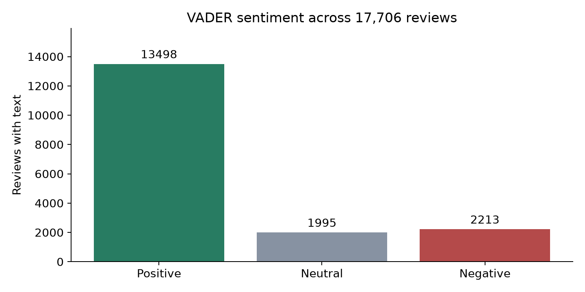

VADER applied to 17,706 original review texts.
Positive compound >= 0.05 | Negative compound <= -0.05 | Neutral between thresholds
| sentiment | reviews | percentage |
|---|---|---|
| Positive | 13498 | 76.23 |
| Neutral | 1995 | 11.27 |
| Negative | 2213 | 12.5 |

Rows: rating sentiment. Columns: VADER sentiment. Agreement is a proxy, not verified accuracy.
| ratingSentiment | Positive | Neutral | Negative |
|---|---|---|---|
| Positive | 12064 | 1373 | 490 |
| Neutral | 674 | 314 | 302 |
| Negative | 760 | 308 | 1421 |
Agreement: 77.93%